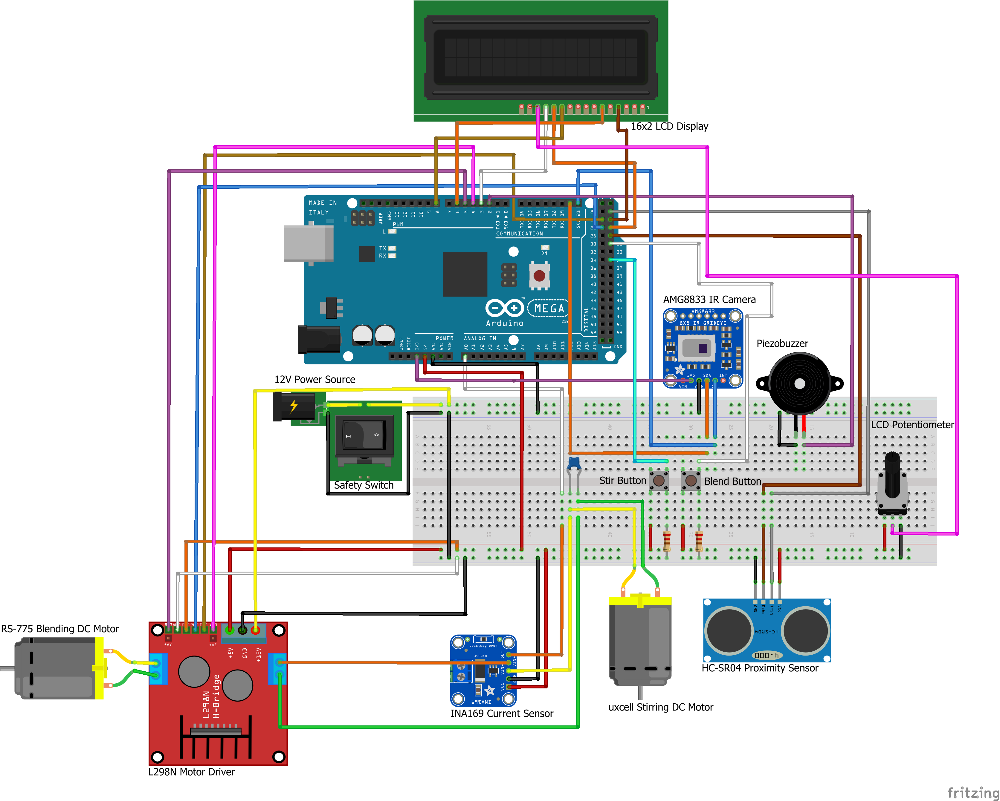
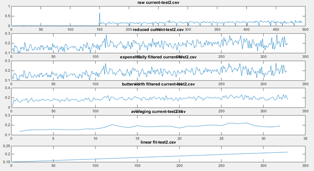
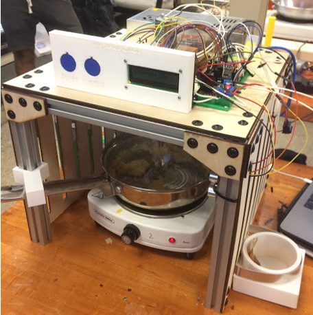

The objective of this project was to design and build a system that whisks and scrambles an egg while monitoring consistency and temperature to measure completion. In the process, we went through phases of needs analysis, specification development, concept generation,
and testing in order to arrive at our final prototype. As team lead, I delegated responsibilities while managing deadlines through Gantt chart planning. This often gave me the opportunity to contribute
in several areas of the project beyond my allotted scope of work to provide support when requested.
My primary contribution was with the electrical/software/sensing subteam. We worked to develop the control system by selecting, function-checking, and implementing electrical components and sensors into the system.
We found that the trickiest problem was measuring consistency. Our working theory was that the egg consistency would increase over time on the stove, changing the torque load on the motor. This change could be measured by monitoring the current draw of the motor. While this made sense in theory, it was difficult to isolate current changes due to the consisteny from other noise in the motor current in reality. Below, I've shown several attempts at filtering the data to isolate the consistency change shown by the linear fit, including Butterworth filters, exponential filters, and running averages.
Eventually, I began testing a variety of ways to fit the empirical data with a more time-weighted model. Eventually, I developed a model that gave me consistent results with the actual egg scrambling process. This model is shown below.
With all the subsystems integrated, our prototype worked flawlessly on demo day - and provided a nutritious breakfast!
